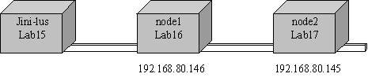

Section Summary: How to configure GigaSpaces for Multiple Network Interface Cards.
1. Viewing Network Interface Information
When loading GigaSpaces space (or when using the <GigaSpaces Root>\bin\PlatformInfo script), the Network Interface information is displayed. Each network card is identified by its Network Interface name and IP.
For example, the following information describes 3 network cards: (eth0/192.168.80.145, eth1/212.143.27.76, ipoib0/192.168.60.145)
Network Interfaces Information:
Host Name: [Lab15.gigaspaces.com]
Network Interface Name: ipoib0 / ipoib0
IP Address: fe80:0:0:0:202:c9ff:fe3c:ff80%5
IP Address: 192.168.60.145
Network Interface Name: eth1 / eth1
IP Address: fe80:0:0:0:204:23ff:feb7:9f3b%3
IP Address: 212.143.27.76
Network Interface Name: eth0 / eth0
IP Address: fe80:0:0:0:204:23ff:feb7:9f3a%2
IP Address: 192.168.80.145
Network Interface Name: lo / lo
IP Address: 0:0:0:0:0:0:0:1%1
IP Address: 127.0.0.1
For the purpose of this section, the default is set to ipoib0/192.168.60.145 and the required configuration is to use the internal connection specified by eth0/192.168.80.145
NIC_ADDR
There is only one environment variable that needs to be configured when limiting the discovery to a specific Network Interface Card. The NIC_ADDR should specify the interface card IP address or name. NIC_ADDR is the value of java.rmi.server.hostname system property, which needs to be appended to RMI_OPTIONS in the setenv.sh(bat) script. By default, RMI_OPTIONS omits this variable – the java.rmi.server.hostname system property is used to resolve the NIC address for all services, which bind to a specific network interface; for example, Jini unicast discovery lookup host, Webster, etc. More specifically, multicast and unicast discovery both use this property to limit and set the desired network interface card.
There are multiple ways to specify the NIC_ADDR:
- Specifying an explicit IP address. For example:
NIC_ADDR=192.168.80.145
- Specifying a network interface name. For example:
NIC_ADDR="#eth0:ip#"
In the above example, eth0 is the interface name and the ip indicates that the registered ip of the interface will be used. It is recommended to use the ip address, however, the host name can also be used by replacing the ip with host.
- Specifying the "local" network interface. For example:
NIC_ADDR="#local:ip#"
This is equivalent to InteAddress.getLocalHost().getHostAddress().
Specifying a Network Card to Bind the Jini Lookup Service (Reggie or Mahalo)
Configuring Lookup Service
The lookup service should be configured to run against a specific Network IP Address (for more details, see Jini Lookup Discovery Service Interface). The NIC_ADDR is used to control it.
Configuring Server Hostname
The server hostname should be configured to use the NIC_ADDR variable. By default The NIC_ADDR environment variable (exposed as part of the <GigaSpaces Installation>\bin\setenv script) omits the system property java.rmi.server.hostname. Append the property to the RMI_OPTIONS:
RMI_OPTIONS="-Djava.rmi.server.hostname=${NIC_ADDR}
-Djava.rmi.server.logCalls=false ..."
On Windows-based machines:
RMI_OPTIONS="-Djava.rmi.server.hostname=%NIC_ADDR%
-Djava.rmi.server.logCalls=false ..."
The java.rmi.server.hostname system property is used to resolve the NIC address for all services, which bind to a specific network interface, e.g. Jini unicast discovery lookup host, Webster, etc.
More specifically, multicast and unicast discovery both use this property to limit and set to the desired network interface card.
Limiting Use to a Specific Network Interface (Multicast Only)
 By default, Jini is configured to support multicast over multiple (all) interface cards. The only time you need to change this, is if you want to limit these interface cards.
By default, Jini is configured to support multicast over multiple (all) interface cards. The only time you need to change this, is if you want to limit these interface cards.
Jini clients perform lookup discovery by either unicast and/or multicast. By default, the configuration is set to multicast. Multicast discovery is configured to use all the network interfaces. To limit the use to a specific network interface, the relevant Jini service configuration file needs to be changed.
The service configuration files are located under <GigaSpaces Root>\config\services. By default, <GigaSpaces Root>\config\services\services.config is used to configure Reggie, Mahalo and other services.
The multicast network interface specifies the network interfaces that send and receive multicast request and announcement packets as part of multicast discovery.
If no value is specified for this Entry, then all network interfaces of the host are used (default). If the Entry value is null, then the interface to which the operating system defaults is used. If the Entry value is a zero-length array, then multicast discovery is disabled.
To limit the network interface to a specific set of network cards, the multicastInterfaces value should be an array of NetworkInterface instances.
The following modification sets the network interface to eth0.
multicastInterfaces=new java.net.NetworkInterface[]{java.net.NetworkInterface.getByName("eth0")};
By default, this line is commented out with the network interface argument as the java.rmi.server.hostname property value. Uncomment this line to limit the multicast to the NIC_ADDR chosen.
multicastInterfaces=new java.net.NetworkInterface[] {java.net.NetworkInterface.getByName("${java.rmi.server.hostname}")};
 For more details, see Sun Javadoc.
For more details, see Sun Javadoc.
Unicast Discovery
Unicast discovery can be either used with or without multicast.
Using Unicast to Register With a Lookup Service
By default, the cluster member URLs are configured to use jini://*/container_name/space_name, which performs lookup using the multicast protocol. To enable unicast in a clustered environment, specify the exact machine network interface card accessible for discovery.
When using unicast to register with a lookup service, the lookup host should be set to where the lookup service is running.
The unicast discovery property is part of your xxx-container-schema.xml:
<unicast_discovery> <!-- Default value: false (unless start-embedded-lus is enabled) --> <enabled>${com.gs.jini_lus.unicast_discovery.enabled}</enabled> <!-- Is a list of unicast hosts separated by comma: localhost:4160 (default value, unless start-embedded-lus is enabled), host1:4160, host2:4160, host3:4184 --> <lus_host>${com.gs.jini_lus.locators}</lus_host> </unicast_discovery>
In order to use eth0/192.169.80.145 as the unicast discovery channel, set the two as follows:
<unicast_discovery> <enabled>true</enabled> <lus_host>eth0</lus_host> </unicast_discovery>
By default, these values are exposed as system properties:
<unicast_discovery> <enabled>${com.gs.jini_lus.unicast_discovery.enabled}</enabled> <lus_host>${com.gs.jini_lus.locators}</lus_host> </unicast_discovery>
By default, unicast discovery is disabled, unless:
- You are running an embedded lookup service, or
- the SpaceURL locators attribute is used.
The lookup host is overridden by merely setting the NIC_ADDR (steps 1 and 2)
Otherwise, to use eth0/192.169.80.145 as the unicast discovery channel, set the two system properties accordingly.
-Dcom.gs.jini_lus.unicast_discovery.enabled=true
-Dcom.gs.jini_lus.locators=${NIC_ADDR}
Or, on Windows-based machines:
-Dcom.gs.jini_lus.locators=%NIC_ADDR%
You might choose to hardcode the values in the XML configuration, but it is highly recommended to either pass system properties or use a properties file (gs.properties file) for overriding default values.
Another simple way to set the unicast discovery is using SpaceURL locators attribute, e.g:
/./mySpace?locators=123.123.123.111:8877
The comma-separated list of IP:ports pairs specify the exact machine network interface card by which the Jini lookup service performs discovery.
Using Unicast to Locate Other Cluster Members
By default the cluster member URLs are configured to use jini://*/container_name/space_name which performs lookup using the multicast protocol.
To use unicast, specify the exact machine network interface card by which the Jini lookup service performs discovery.
<member> <member-name>container1:space1</member-name> <member-url>jini://192.168.80.145/container1/space1</member-url> </member>
When loading a cluster using a cluster schema XSL configuration file, the cluster members' information is built during runtime. To specify the protocol for the member-url, set the following system property accordingly:
-Dcom.gs.cluster.url-protocol-prefix=jini://${NIC_ADDR}/
Or, on a Windows-based machine:
-Dcom.gs.cluster.url-protocol-prefix=jini://%NIC_ADDR%/
 You can set the jini:// and/or rmi:// protocols in the com.gs.cluster.url-protocol-prefix system property.
You can set the jini:// and/or rmi:// protocols in the com.gs.cluster.url-protocol-prefix system property.
Testing Your Configuration
The replicated example, located under <GigaSpaces Root>\examples\Advanced\Data_Grid\replicated, can be used to test the above configuration. The example interacts using the setenv and gsInstance scripts.
The NIC_ADDR should be set corresponding at each machine's network interface card.
For the purpose of the example, node1 and node2 are loaded at Lab16.gigaspaces.com and Lab17.gigaspaces.com respectively. Both have a network card configured for eth0 (spanning IPs 192.168.80.145...147). Both nodes should be configured with the corresponding NIC_ADDR property of their own network interface IP address for eth0.

To apply this configuration easily, the NIC_ADDR can be passed at the script level of each node, before the call to setenv, thus overriding the default value set for this property in the setenv script.
For example:
bin/start-node1 script should set NIC_ADDR with 192.168.80.146 bin/start-node2 script should set NIC_ADDR with 192.168.80.147
On unix:
NIC_ADDR=192.168.80.146; export NIC_ADDR . setExampleEnv.sh
On windows:
@set NIC_ADDR=192.168.80.146 @call setExampleEnv.bat
The example attempts to locate the cluster members, and once communication has been established with each, the cluster is announced as active.
Replicator: Connection established with target space [ source space: rep_cache_container1:rep_cache ] [ target space: rep_cache_container2:rep_cache ]
Discovery by Unicast
The configuration for unicast can be added to the setenv script, and should be appended to the gsInstance script loading an instance of each node.
Additionally, you can set the SpaceURL locators attribute.
setenv:
UNIX_ENABLED=-Dcom.gs.jini_lus.unicast_discovery.enabled=true URL_PREFIX=-Dcom.gs.cluster.url-protocol-prefix=jini://${NIC_ADDR}/
gsInstance:
${JAVACMD} ${UNIX_ENABLED} ${URL_PREFIX} ${RMI_OPTIONS} ${JAVA_OPTIONS} -Dcom.gs.home=${JSHOMEDIR}
-classpath "${APPEND_TO_CLASSPATH_ARG}${CPS}$
{JSHOMEDIR}${CPS}${JSHOMEDIR}/lib/JSpaces.jar" com.j_spaces.core.client.SpaceFinder "${SPACE_URL}"
The <GigaSpaces Root>\bin\start-node1 and the <GigaSpaces Root>\bin\start-node2 scripts should set NIC_ADDR as mentioned above.
Remember that the NIC_ADDR variable is set prior to the call to setExampleEnv, thus overriding the NIC_ADDR set in the setenv script.
NIC_ADDR=192.168.80.146; export NIC_ADDR . setExampleEnv.sh
Troubleshooting Your Configuration
For details on viewing the exact configuration in which the system is currently running, refer to the Container Maintenance section.
Logging with RMI_OPTIONS
The RMI_OPTIONS environment variable specifies a system property used for logging calls:
java.rmi.server.logCalls=false
This property can be set to true, enabling log output to the screen. Both lookup service and lookup registrars can be configured to show which network IP address they are trying to communicate with.
Identifying Wrong Configuration
Something similar to the following can indicate a wrong configuration:
Sep 12, 2005 8:00:13 PM sun.rmi.server.UnicastServerRef logCall
FINER: RMI TCP Connection(6)-192.168.80.145: [192.168.80.145:
sun.rmi.transport.DGCImpl[0:0:0, 2]: java.rmi.dgc.Lease
dirty(java.rmi.server.ObjID[], long, java.rmi.dgc.Lease)]
Bind Exception
A bind exception could be the cause of a machine trying to bind to a lookup service not on the correctly configured network interface. For example, if node2 had its ${NIC_ADDR} configured to 192.168.80.145, while its own network interface for eth0 is 192.168.80.147.
9/13/05 12:13:45 AM | rep_cache_container2 | main | Cannot initialize JoinManager Exception:
java.rmi.RemoteException: Failed to init. Protocol Registry: java.rmi.RemoteException:
Failed initialization of LRMI over NIO Protocol Adapter: Cannot assign requested address; nested exception is:
java.net.BindException: Cannot assign requested address
...